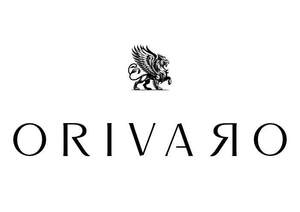

Trade Mark Journal No.2025/039 26 September 2025
UK00004262731 11 September 2025 (14,16,18,25,26)

- Class 14
- Lapel pins; Ornamental lapel pins; Cloisonne pins; Tie pins; Lanyards for keys; Key tags [trinkets or fobs]; Jewelry pins for use on hats; Jewelry hat pins; Jewellery hat pins; Ornamental hat pins.
- Class 16
- Art prints; Graphic art prints; Prints; Printed art reproductions; Graphic art reproductions; Photographic prints; Graphic prints; Canvas prints; Art pictures; Pictorial prints; Cartoon prints; Photo prints; Graphic prints and representations; Prints in the nature of pictures; Color prints; Works of art made of paper; Silk screen prints; Graphic reproductions; Reproductions (Graphic -); Posters; Mounted posters; Posters made of paper; Postcards and picture postcards; Printed visuals; Picture postcards; Stickers; Stickers [stationery]; Graphic art books; Wall calendars.
- Class 18
- Leather bags and wallets; Luggage, bags, wallets and other carriers; Bags; Wallets; Tote bags; Duffel bags; Luggage bags; Duffle bags; Carry-on bags; Bags for clothes; Belt bags and hip bags; Leather wallets; Pocket wallets; Wallets (Pocket -); Carry-all bags; Toiletry bags; Crossbody bags; Cross-body bags; Pocketbooks [handbags]; Canvas bags; Bags [envelopes, pouches] of leather, for packaging; Bags [envelopes, pouches] for packaging of leather; Card wallets [leatherware]; Drawstring bags; Carrying bags; Duffel bags for travel; Souvenir bags; Leather shopping bags; Cloth bags; Canvas shopping bags; Card wallets; Shoulder bags; Sling bags; Wallets for attachment to belts; Bum bags; Suit bags; Boot bags; Gym bags; Grocery tote bags; Leather bags; Belt bags.
- Class 25
- Clothing; Knitwear [clothing]; Jackets [clothing]; Ready-to-wear clothing; Woolen clothing; Linen clothing; Headbands [clothing]; Headbands for clothing; Gloves [clothing]; Gloves as clothing; Clothes; Kerchiefs [clothing]; Jerseys [clothing]; Denims [clothing]; Shorts [clothing]; Cashmere clothing; Capes (clothing); Leather clothing; Clothing of leather; Leather (Clothing of -); Silk clothing; Collars [clothing]; Knitted clothing; Windproof clothing; Hoods [clothing]; Wristbands [clothing]; Embroidered clothing; Belts [clothing]; Belts for clothing; Rainproof clothing; Waterproof clothing; Casual clothing; Visors [clothing]; Jackets being sports clothing; Jackets (Stuff -) [clothing]; Stuff jackets [clothing]; Bottoms [clothing]; Ready-made clothing; Clothing for leisure wear; Trunks being clothing; Infant clothing; Woven clothing; Drawers as clothing; Leisure clothing; Ties [clothing]; Clothing for sports; Sports clothing; Athletic clothing; Clothing for children; Bodies [clothing]; Clothing for infants; Tops [clothing]; Weatherproof clothing; Pockets for clothing; Fabric belts [clothing]; Water-resistant clothing; Clothing for skiing; Beach clothing; Thermal clothing; Men's clothing; Braces for clothing; Hats; Beanie hats; Baseball hats; Baseball caps and hats; Sports caps and hats; Beanies; Fedoras; Caps [headwear]; Caps being headwear; Scarves; Scarfs; Bandanas [neckerchiefs]; Snoods [scarves]; Headgear for wear; Bandannas; Bandanas; Head scarves; Headwear; Caps with visors; Berets; Gloves for apparel; Sweaters; Fingerless gloves as clothing; Shirts; Jumpers [sweaters]; T-shirts; Visors [headwear]; Knit shirts; Short-sleeved T-shirts; Short-sleeved shirts; Hooded sweatshirts; Long-sleeved shirts; Casual shirts; Short-sleeve shirts; Men's and women's jackets, coats, trousers, vests; Hoodies; Hooded pullovers; Sweatshirts; Hooded sweat shirts; Fleece jackets; V-neck sweaters; Sleeved jackets; Collared shirts; Sweatpants; Jackets; Fleece pullovers; Cardigans; Balaclavas; Tank-tops; Sleeveless pullovers; Pullovers; Sleeveless jerseys; Jumpers [pullovers]; Hooded tops; Overshirts; Fleece vests; Polo shirts; Casual jackets; Fleece tops; Tracksuit bottoms; Jeans; Shorts; Cargo pants; Denim jeans; Thong sandals; Babies' pants [clothing]; Athletic tights; Vest tops; Shoes for leisurewear.
- Class 26
- Elastic strips incorporating clips for securing trousers to riding boots.
Lee O'Neill